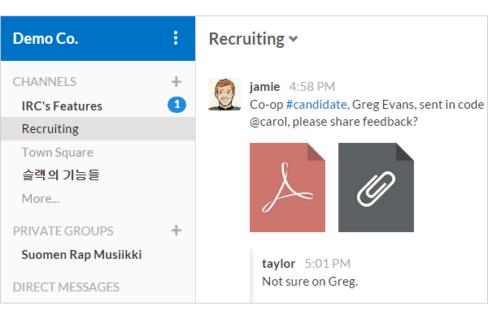

Slack 的开源替代品 Mattermost
Mattermost 是一个 Slack 的开源替代品。Mattermost 采用 Go 语言开发，这是一个开源的团队通讯服务。为团队带来跨 PC 和移动设备的消息、文件分享，提供归档和搜索功能。
Slack 是聊天群组 + 大规模工具集成 + 文件整合 + 统一搜索。截至2014年底，Slack 已经整合了电子邮件、短信、Google Drives、Twitter、Trello、Asana、GitHub 等 65 种工具和服务，把可以把各种碎片化的企业沟通和协作集中到一起。



项目Github链接：http://github.com/mattermost/platform
简单 golang 日志 Golog
Golog 是简单的golang日志，基于golang内置log封装.
特征
实现各种日志 level: DEBUG, INFO, WARN, ERROR
实现各种日志 handlers: ConsoleHander, FileHandler, RotatingHandler
代码实例
// rotating hander, max log files is 4, max file size is 4M
rotatingHandler := logger.NewRotatingHandler("./", "test.log", 4, 4*1024*1024)
// logger set handlers: console, rotating
logger.SetHandlers(logger.Console, rotatingHandler)
defer logger.Close()
// logger set flags
logger.SetFlags(log.Ldate | log.Ltime | log.Lshortfile)
// logger set log level
logger.SetLevel(logger.INFO)
logger.Debug("something", "debug")
logger.Info("something")
logger.Warn("something")
logger.Error("something")
项目Github链接：https://github.com/jander/golog
Go 编写的内容管理系统 Fragmenta CMS
Fragmenta CMS 是一个用户友好的内容管理系统，用 Go 编写。
Fragmenta CMS 可以让你快速建立网站，它包办了创建网站的一般性的繁琐工作，包括：用户登录，网页，博客文章等，让你专注于你 app 自身的特点，你可以:
简单部署 —— 你只需要一个数据库和fragment —— 与内置的Web服务器本地进行测试
使用与你网站相同的风格进行Rich editing
免费且开源 (MIT) ——下载二进制文件或自己编译
项目的Github链接：http://github.com/fragmenta/fragmenta-cms
项目的主页链接：http://fragmenta.eu/
Copyright © 2016, golog.cc